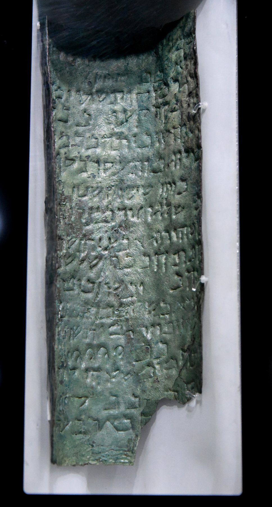

Copper Scroll (3Q15)

- Find Name
- Copper Scroll (3Q15)
- Description
- The only Dead Sea Scroll written on metal: three copper sheets (about 99% copper with about 1% tin) riveted end to end, about 2.4 metres by 28 centimetres, with letters punched into the metal in a Hebrew dialect close to Mishnaic Hebrew. It was found on 14 March 1952 at the back of Qumran Cave 3 by Henri de Contenson's team, in two oxidized rolls, and was cut into 23 strips at Manchester in 1955–56 because corrosion made unrolling impossible. It is not a religious text but a list of about 64 treasure caches — gold, silver and vessels — each with place, direction and depth directions, and it is now at the Jordan Museum, Amman.
- Historical Period
- Hellenistic–Roman
- Evidence Class
- Contextual
- Interpretations
- The Copper Scroll illuminates the world of hidden wealth, revolt and temple treasure in first-century Judea, and it is dated by many scholars to the First Jewish Revolt period (about 66–70 AD). Whether its treasure was real Temple treasure, the community's own wealth, or a legendary list is unresolved, and no cache has ever been conclusively identified from its directions, so it must not be treated as a working treasure map.
- Related Places
- Biblical Significance
- It is a unique material witness to the turmoil of first-century Judea, when temple wealth and hiding valuables from Rome were urgent realities behind the world of the New Testament.
- Artifact Date
- c. 50–100 AD (many scholars: First Jewish Revolt period, c. 66–70 AD)
- Current Location
- Jordan Museum, Amman
- Date Discovered
- 1952-03-14
- Discovery Location
- Qumran Cave 3
- Timeline Era
- Return and Second Temple
Awaiting Review Not yet checked against scholarly sources. Treat its claims as provisional until this entry is reviewed. About verification
Last reviewed: not yet reviewed